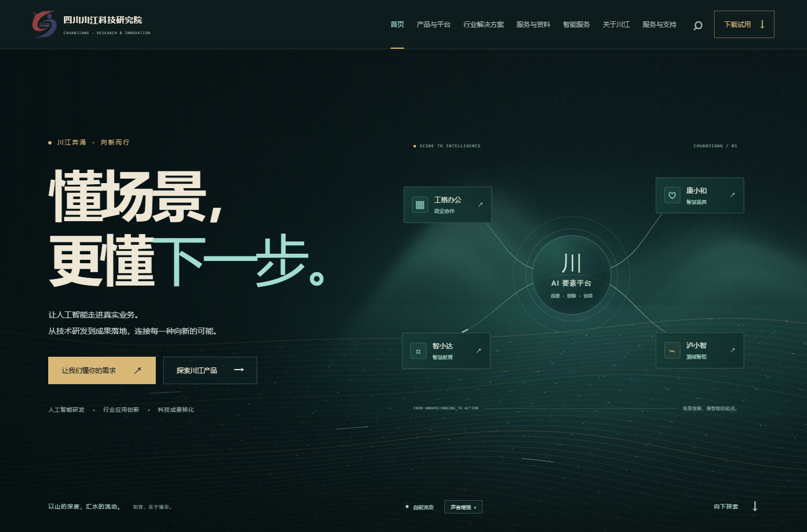
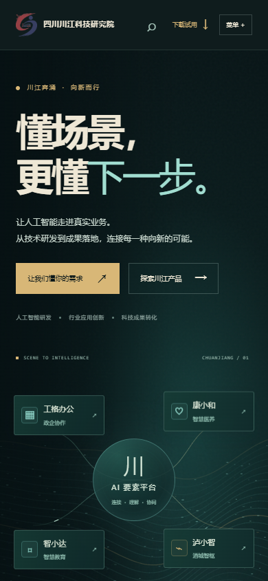
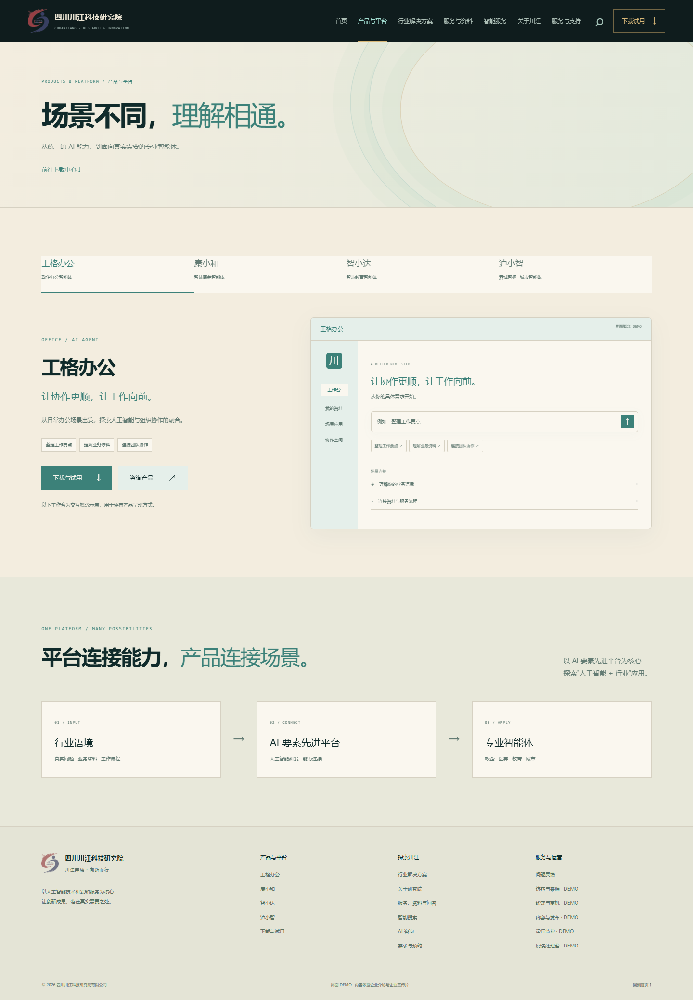
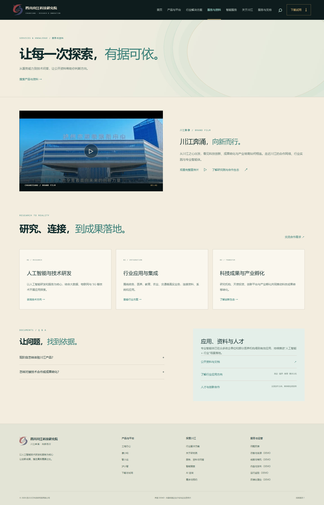
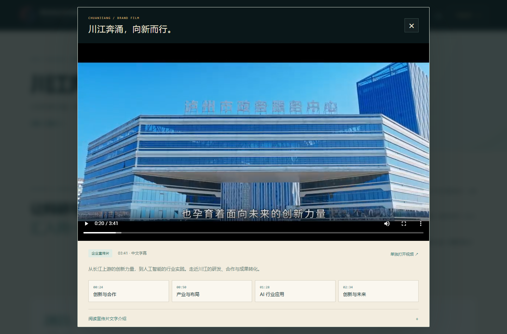
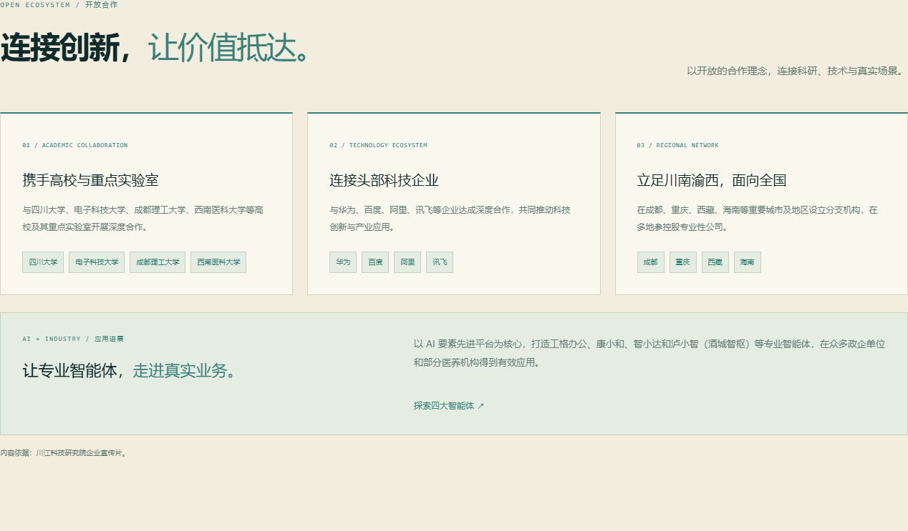
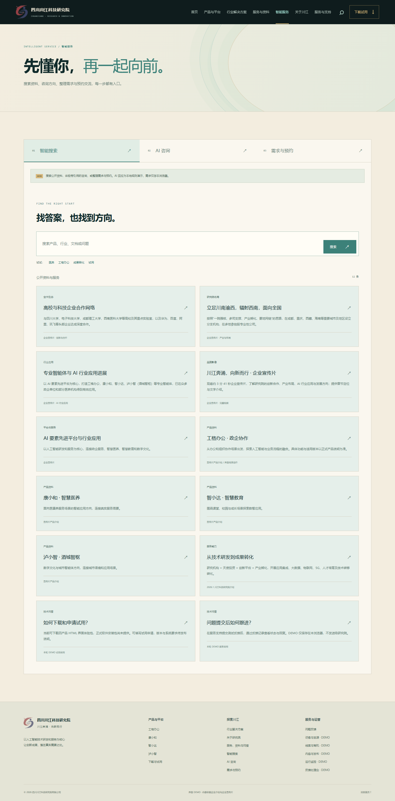
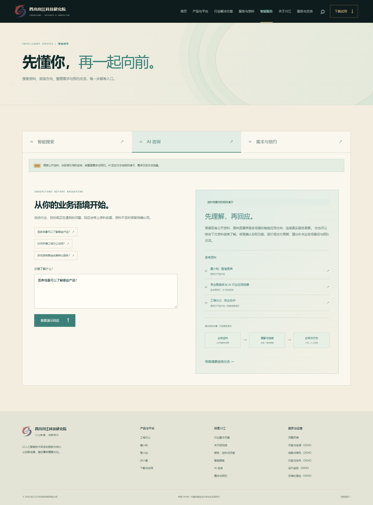
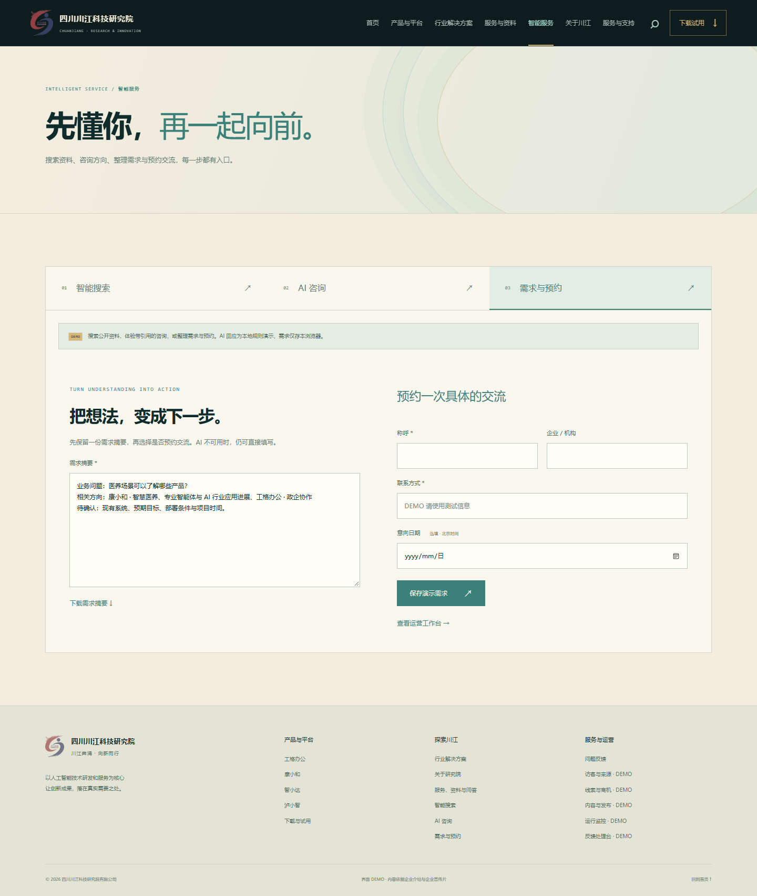
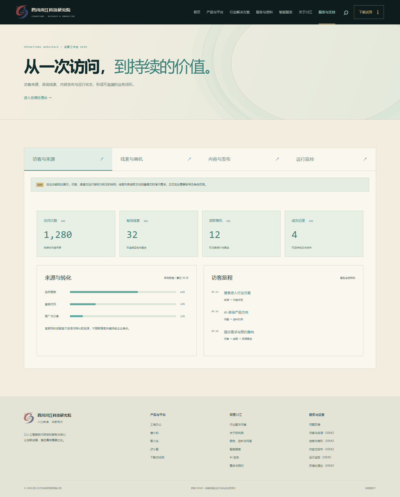

四川川江科技研究院 · 界面 DEMO V5
山水写意，
知音在于懂你。
以第一版的饱和度为基准，校准深青墨、水青、暖金与浅米。扩大水域，让山的写意层次更清楚；把“懂你”落到搜索、咨询、需求、预约和持续运营。本次接入完整企业宣传片，以实际素材补齐品牌与合作生态。
第一版的气韵，更完整的功能。
本版保留既有业务、产品与技术功能入口；修正第三版的灰绿、橄榄绿和蓝紫漂移，按第一版的饱和度统一全站。传统意象服务于研究院的品牌记忆，网站最终落脚在科技服务和实际行动。
首屏恢复第一版深青墨底与水青亮部；LOGO 去白底、降低对比。
内页以浅米暖纸色承载内容；正文和按钮保留清晰对比。
流线、交互状态和产品结构共用水青色阶，取消蓝紫与橄榄绿。
行动按钮与局部反光使用暖金，与第一版的视觉重点相呼应。
山以远近墨色显出气势，水域展开至首屏下半部；粒子随波聚散，交互持续回应。




粒子是水光，山势是淡墨。
山体用较亮的远山与更深的近山叠出体积，以柔化墨边表达写意。水从原先首屏底部扩展至下半部，连续流线和细长水光粒子共享波场，让流动方向更明显。动画持续自动运行，鼠标、滚动和可选声音只改变节奏。
山 / 隐而有势
增强远近墨色差异和山势起伏；边缘柔化，保留气韵与留白。
水 / 神似水波
流线与粒子共享波场，亮点有方向地随波运动，不以均匀散点充满背景。
知音 / 行为回应
选择行业、搜索资料、咨询问题，再带着摘要继续交流。让“懂你”成为操作路径。


真实的素材，完整的品牌叙事。
将原先只有文字的品牌故事替换为完整企业宣传片，并在首页、关于川江和服务与资料设置入口。观看窗口提供章节定位、原片中文字幕及解说文字；关闭或切换页面时暂停，移动端保留原生播放控制。


试看包附带原始视频和封面，解压后保留“品牌素材”文件夹即可播放。首屏加载时不预取整段视频，访客点击观看后开始播放。
从找资料，到理解需要。
顶部搜索、主导航“智能服务”和首页服务入口共同承接架构中已确定的搜索与 AI 售前。搜索支持本地公开资料，咨询回应包含资料依据、待确认项和建议图示。


理解之后，有下一步。
咨询结果可带入需求摘要，下载留存，或直接填写需求与北京时间预约意向。演示需求进入本地线索台，可评估填写完整度、记录跟进、报价与成交 / 流失状态。


把技术功能，落实为可见入口。
| 架构中的功能 | 本版界面入口与表现 |
|---|---|
| 内容与搜索增长 | 服务、行业、公开资料与技术问答；案例与人才合作入口。CMS 展示内容类型、SEO 字段、Sitemap 与渠道监测规划。 |
| 智能搜索与 AI 售前 | 搜索公开资料、规则咨询、引用、待确认项、可信模板架构图示；从问题走向需求摘要。 |
| 需求、预约与销售闭环 | 摘要下载、独立表单、预约意向、本地线索、规则评分、跟进、商机、报价、成交 / 流失。 |
| 下载与反馈支持 | 界面体验包实际下载、试用申请、反馈编号、管理回复与状态更新。 |
| 访客来源与旅程 | 运营工作台展示来源比例、访问旅程与转化样例；不冒充真实访问分析。 |
| 审批、发布与索引 | 编辑 / 审核 / 管理员角色示意；草稿、审核、发布、撤回；CMS、页面与索引状态分开。 |
| 监控、任务与回滚 | 性能、错误、模型耗时与成本、异步任务、搜索渠道、上线与回滚规划入口。 |
看见风格，也看见功能。
解压后双击“双击打开试看.html”，用 Edge 或 Chrome 离线体验。首页、产品、行业、服务资料、智能服务、关于、下载、支持、反馈处理台与运营工作台共十个页面，智能服务与运营端各有独立功能视图。
建议按这条路径试看
- 首页：观察墨色山势、水波流线与粒子；无声也持续运行。
- 智能服务：搜索“医养”，再咨询一个产品或业务问题。
- 需求与预约：带入摘要、下载，填写测试信息保存。
- 运营工作台：查看本地线索，记录跟进，切换发布与监控功能。
- 下载中心与服务支持：体验实际下载和反馈回复闭环。
当前可体验
视觉动效、十个页面、搜索与引用、需求摘要、本地预约意向、反馈处理、线索跟进和发布状态。
资料待补充
正式软件、详细功能手册、具名案例与量化效果、具体职位、企业联系方式。
上线再实施
模型与语义检索、账号权限、真实采集、日历确认、数据库、CRM、监控与生产发布。
素材依据：2026.1 川江科技研究院介绍、原始 LOGO、完整企业宣传片及其解说稿。技术功能对照原技术栈决策；保留此前各版交付包。